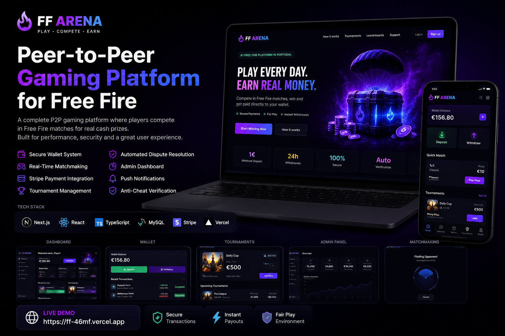

ConcluídoFF Arena — Plataforma de Jogos P2P em Tempo Real
- Problema
- Jogadores de Free Fire não tinham uma plataforma dedicada para organizar partidas P2P com apostas e torneios de forma segura.
- Solução
- Plataforma com autenticação, matchmaking em tempo real, torneios, carteiras, pagamentos, resolução de disputas e painel administrativo.
Next.js
TypeScript
Stripe API
MySQL
Ver projeto